커피를 마시는 일상적인 순간을 더 감각적이고 기억에 남는 경험으로 바꾸는 것이 목표입니다. 컵, 쇼핑백, 메뉴판, 카드와 포장재에 일관된 디자인 시스템을 적용해 매장 안팎에서 같은 브랜드 인상을 전달합니다.
Portfolio / Brand Identity
Cafe DEV
dev는 커피의 일상성과 디자인적 감도를 함께 전달하는 미니멀 커피 브랜드입니다. 한 잔의 커피를 세련된 라이프스타일 경험으로 느끼게 하는 방향으로 설계했으며, 블랙과 화이트를 중심으로 정제된 브랜드 인상을 구축했습니다.
- Scope
- Brand Identity / F&B
- Studio
- BDLab
- Year
- 2026
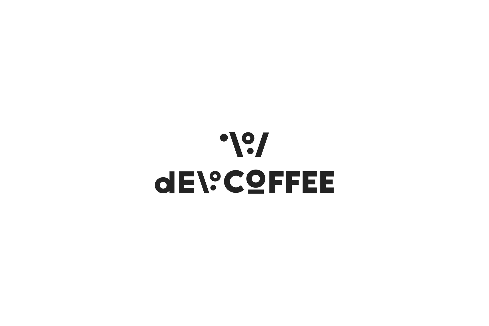
“일상 속 커피를 더 감각적인 경험으로 만든다”는 메시지를 중심으로, 커피 한 잔이 하루의 리듬과 작은 여유를 만드는 순간임을 간결한 문장과 강한 그래픽으로 표현했습니다.
블랙과 화이트의 선명한 대비, 넓은 여백, 굵은 로고와 단순한 도형을 기반으로 시각 시스템을 구성했습니다. 스테인리스와 그레이 톤의 공간 요소까지 연결해 모던하고 정돈된 브랜드 무드를 강화했습니다.
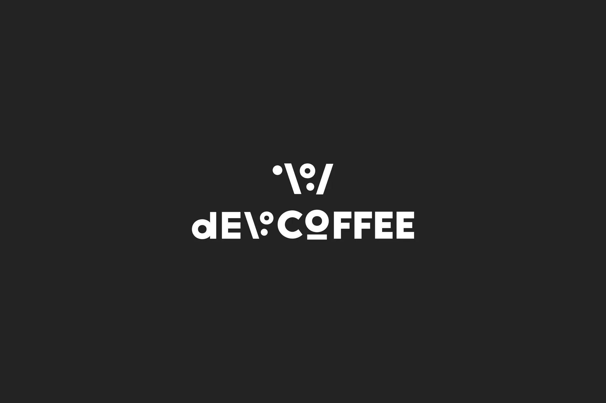
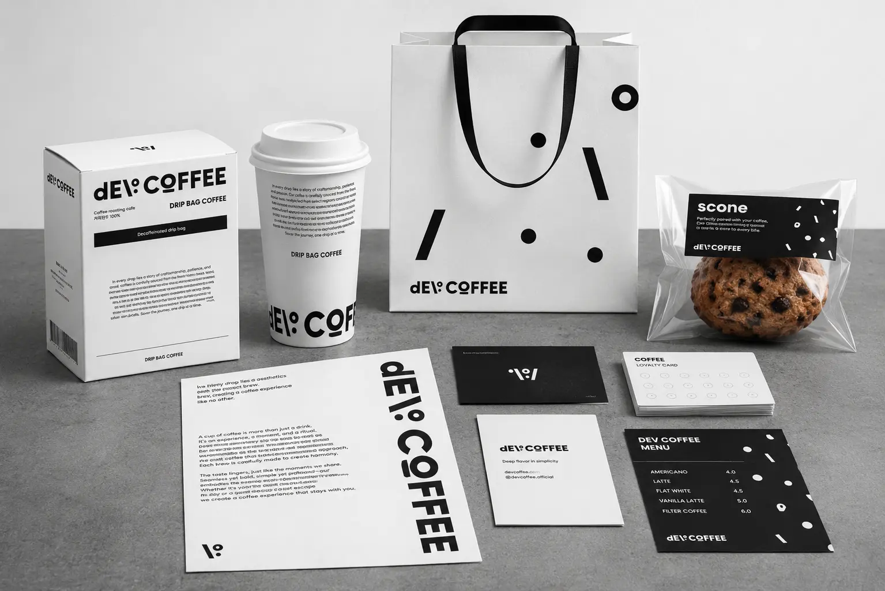
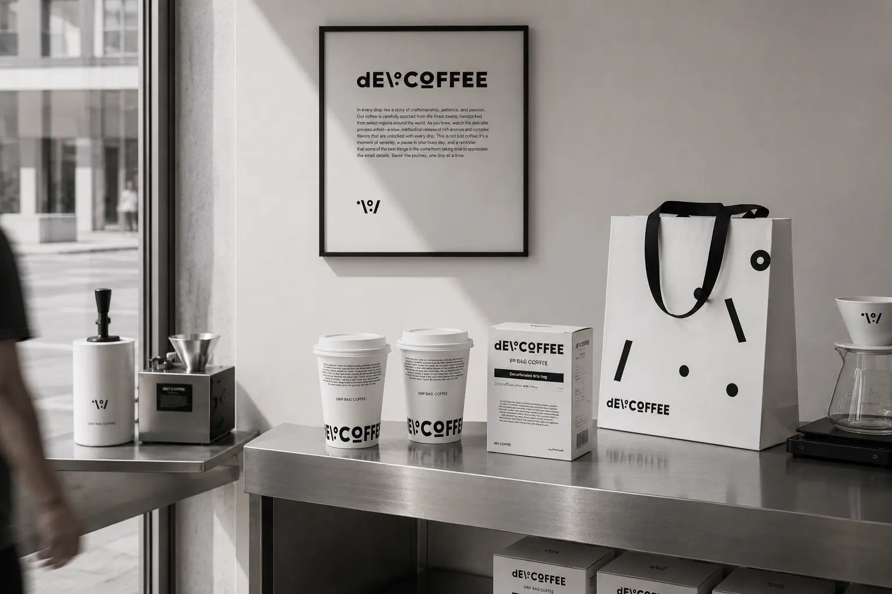
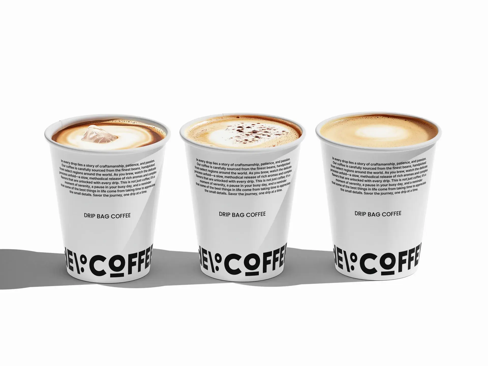
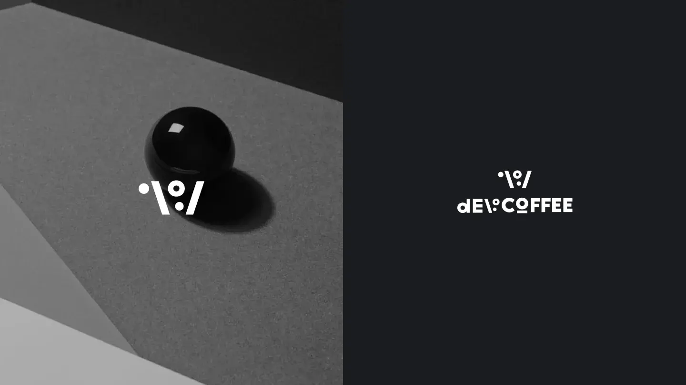
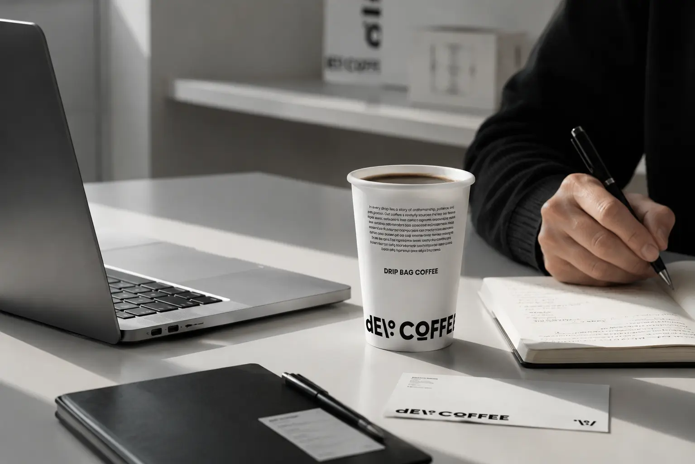
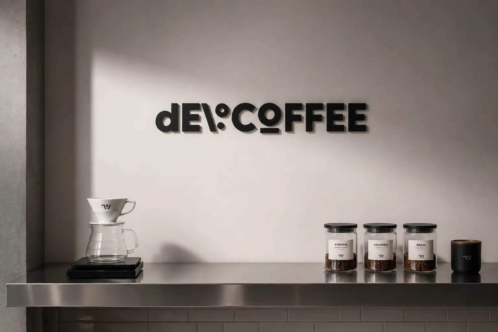
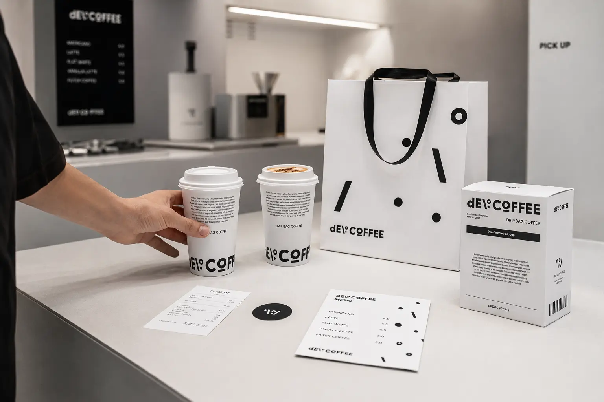
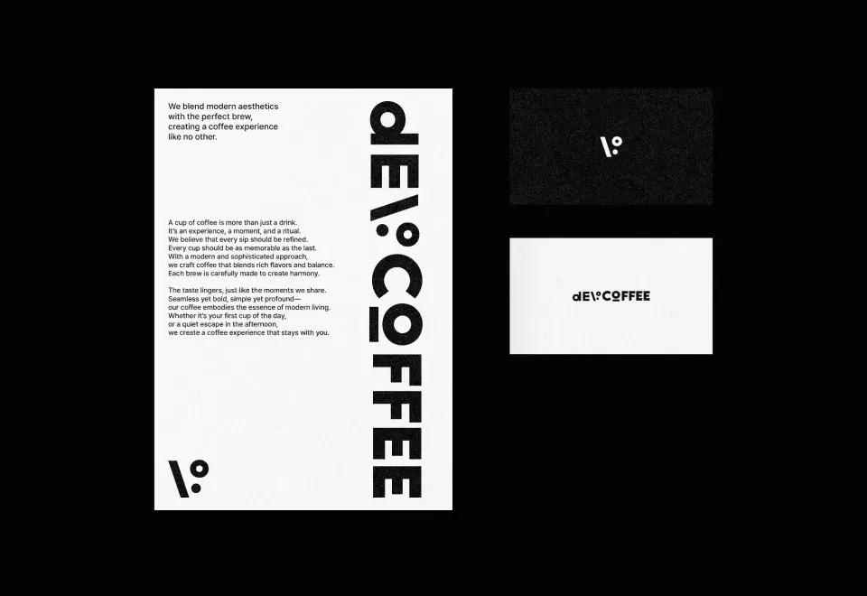
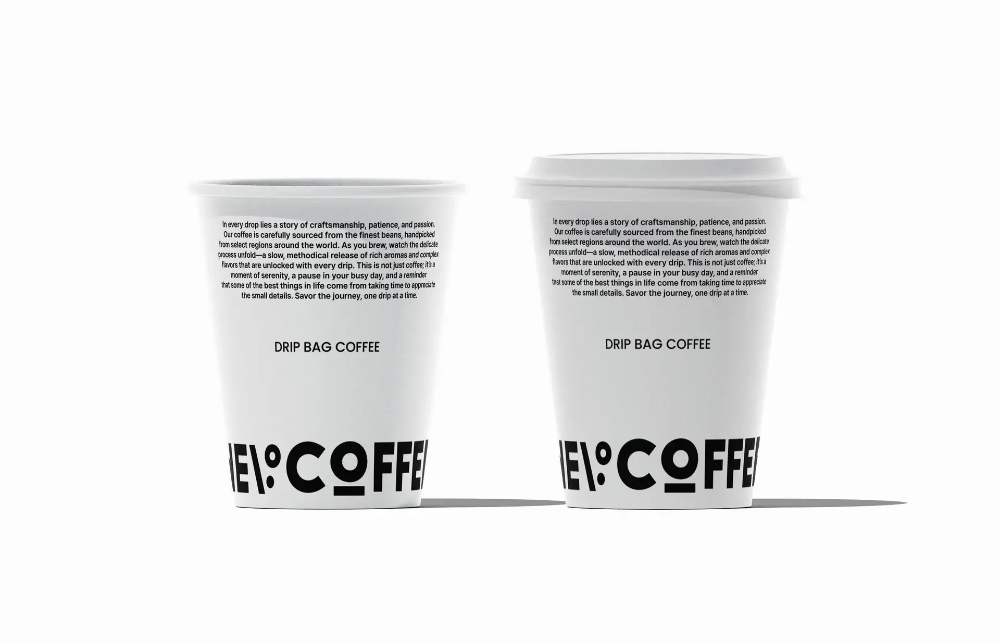
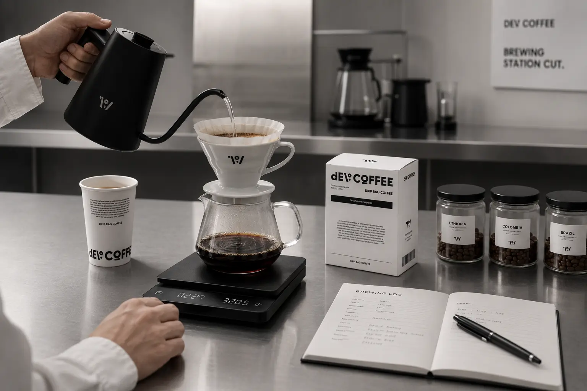
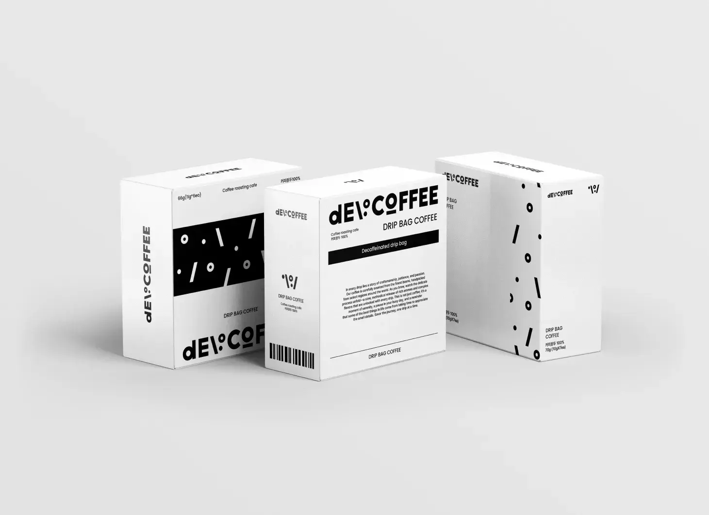
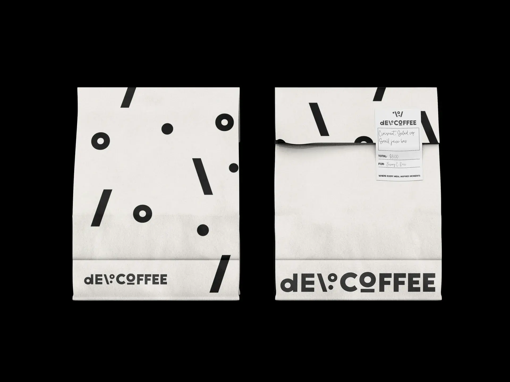